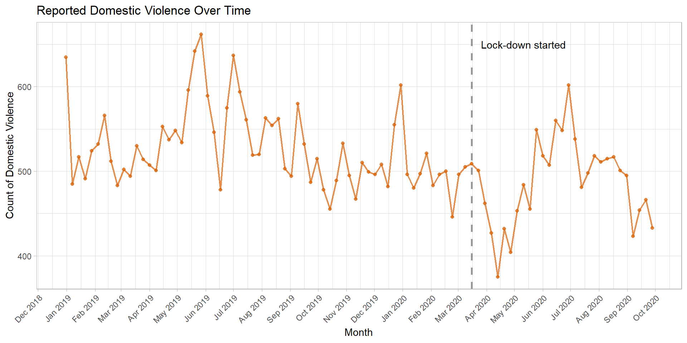

Reported Domestic Violence in Chicago City, IL
Before and After the COVID-19 Lockdown
Ting Chang
1 Introduction
The surging cases of COVID-19 in spring 2020 has caused governments around the world to announce the lockdown policy (stay home order) in order to slow down the spread of pandemic. While COVID-19 is a worldwide health crisis, some researchers have expressed concern for another crucial health threat, domestic violence, which is expected to increase while more people were constrained at home.
This project aims to explore the spatial and temporal distribution of the domestic violence in Chicago City, Illinois using the crime reported data. In particularly, to examine whether the reported domestic violence has increased as expected after the implementation of lockdown.
2 Materials and methods
2.1 Set Up
In order to run the code below, firstly, we need to load the following packages in R, you might need to install some of them in ahead. If your environment and locale is not set to English, utilizing the two lines start with Sys., it would help plotting the date label in English. Otherwise, please comment out these two lines.
library(tidyverse)
library(tidycensus)
library(kableExtra)
library(ggplot2)
library(sf)
library(RColorBrewer)
library(viridis)
library(gridExtra)
library(classInt)
knitr::opts_chunk$set(cache=TRUE) # cache the results for quick compiling
# For plotting date label in English
Sys.setenv("LANGUAGE"="En")
Sys.setlocale("LC_ALL", "English")
# Changing environment and locale language learned from:
# https://stackoverflow.com/questions/15438429/axis-labels-are-not-plotted-in-english2.2 Data Import and Processing
In this part, our goal is to prepare the data for the analysis below. We want to obtain the following data:
- The basic geographic unit for the analysis:
- census block group spatial data
- The primary variable for our analysis:
- Domestic violence count
- Domestic violence rate
- Domestic violence count
- The social-economics factors for the domestic violence:
- Crime rate
- Median household income
- Unemployment rate
- Crime rate
And we will obtain these datasets from the following data source:
- Census TIGER data (Data has already been processed and provided in the data folder.)
- Census data - American Community Survey 5-year estimated (2018)
- Crime reported data from Chicago Data Portal
2.2.1 Chicago City’s census block group shapefile
Load the data
The Chicago City’s census block group shapefile is provided in the data folder. I have obtained it previously from the census TIGER data.
# Load chicago CBG shapefile in R
chicago_cbg <- st_read("data/chicago_cbg.shp") %>%
select(CensusBloc)2.2.2 Census data
Data download
We will download several datasets from the American Community Survey 5-Year data at the census block group level using the lovely package, tidycensus. Since the newest released estimated data is the 2018 year version, we will download data from 2018.
# For searching variables from ACS-5yr 2018
v18 <- load_variables(2018, "acs5", cache = TRUE)
# Downloading population data
population_18 <- get_acs(geography = "block group",
variables = c(population = "B01003_001"),
state = "IL",
county = c("Cook", "DuPage"),
year = 2018)
# Downloading median household income data
median_income_18 <- get_acs(geography = "block group",
variables = c(medincome = "B19013_001"),
state = "IL",
county = c("Cook", "DuPage"),
year = 2018)
# Downloading employment data
employment_18 <- get_acs(geography = "block group",
variables = c(total_in_labor = "B23025_002", unemployed = "B23025_005"),
state = "IL",
county = c("Cook", "DuPage"),
year = 2018,
output = "wide")Data Processing
Afterwards, we will crop the obtained census data to the Chicago City using the pre-loaded shapefile and slightly tidy up our data.
# Population data
population_18 <- left_join(chicago_cbg, population_18, by = c("CensusBloc" = "GEOID")) %>%
select(CensusBloc, population = estimate)
# Median household income data
median_income_18 <- left_join(chicago_cbg, median_income_18, by = c("CensusBloc" = "GEOID")) %>%
select(CensusBloc, median_income = estimate)
# Unemployment rate data
employment_18 <- left_join(chicago_cbg, employment_18, by = c("CensusBloc" = "GEOID")) %>%
# calculate the unemployment rate by dividing the unemployed population by the total in labor population
select(CensusBloc, total_in_labor = total_in_laborE, unemployed = unemployedE) %>%
mutate(unemployment_rate = unemployed/total_in_labor)2.2.3 Crime reported data
Data download
The crime reported data will be obtained from the Chicago Data Portal via Socrata Open Data API. If the API does not work, try download the .csv file from the provided link.
# Download crime reported data and load it in R
dataurl = "https://data.cityofchicago.org/resource/ijzp-q8t2.csv?$order=Date DESC&$limit=460000&$offset=20000"
tdir = tempdir()
download.file(dataurl, destfile = file.path(tdir, "chicago_crime.csv"))
chicago_crime <- read_csv(paste(tdir,"/chicago_crime.csv", sep = ""))
# Tidy the data
chicago_crime_clean <- chicago_crime %>%
mutate(date = as.Date(date, "%Y.%m.%d")) %>%
filter(as.Date(date) >= "2018-12-31" & as.Date(date) <= "2020-10-04") %>%
select(-block, -iucr, -beat, -district, -ward, -community_area, -x_coordinate, -y_coordinate, -year, -location) %>%
drop_na(latitude, longitude)
# The SODA API docs:
# https://dev.socrata.com/foundry/data.cityofchicago.org/ijzp-q8t2
# The SODA API query docs:
# https://dev.socrata.com/docs/queries/
# Learn paste() function from:
# https://stackoverflow.com/questions/27378116/how-to-change-a-file-path-in-r-with-a-constantData preparation
Add the census block group information
Then, we will apply the spatial join function st_join to compute which census block group did each crime incident occur and add it to our crime record dataframe.
# Convert crime reported data to sf object
chicago_crime_clean <- st_as_sf(chicago_crime_clean, coords = c("longitude", "latitude"),
crs = st_crs(chicago_cbg))
# Spatial joint the crime reported data with census block groups shapefile
chicago_crime_cbg <- st_join(chicago_crime_clean, chicago_cbg) %>%
st_set_geometry(NULL)Domestic Violence reported data
Once we have finished processing the crime reported data, we can now use it to obtain the domestic violence reported data. We will utilize three columns from the obtained crime records to extract the domestic violence records:
domestic: Whether the incident was domestic-related as defined by the Illinois Domestic Violence Act.location_description: The location where the incident occurred.primary_type: The primary description of the IUCR code.
# Filter out only the DV occurred in residential place
list_location <- c("APARTMENT",
"CHA APARTMENT",
"CHA HALLWAY / STAIRWELL / ELEVATOR",
"CHA HALLWAY/STAIRWELL/ELEVATOR",
"CHA PARKING LOT",
"CHA PARKING LOT / GROUNDS",
"CHA PARKING LOT/GROUNDS",
"COACH HOUSE",
"DRIVEWAY - RESIDENTIAL",
"HOUSE",
"NURSING / RETIREMENT HOME",
"NURSING HOME/RETIREMENT HOME",
"RESIDENCE",
"RESIDENCE - GARAGE",
"RESIDENCE - PORCH / HALLWAY",
"RESIDENCE - YARD (FRONT / BACK)",
"RESIDENCE PORCH/HALLWAY",
"RESIDENCE-GARAGE",
"RESIDENTIAL YARD (FRONT/BACK)")
# Filter the crime type
list_crime_type <- c("ARSON",
"ASSAULT",
"BATTERY",
"BURGLARY",
"CRIM SEXUAL ASSAULT",
"CRIMINAL SEXUAL ASSAULT",
"DOMESTIC VIOLENCE",
"HOMICIDE",
"INTIMIDATION",
"KIDNAPPING",
"OBSCENITY",
"OFFENSE INVOLVING CHILDREN",
"OTHER OFFENSE",
"SEX OFFENSE",
"STALKING")
chicago_dv_cbg <- chicago_crime_cbg %>%
filter(domestic == TRUE & location_description %in% list_location & primary_type %in% list_crime_type)Data processing
All the preparing works for crime reported data and domestic violence reported data have been done now. Next, we will work on deriving the related variables what will be used in the analysis, including the crime rate of census block groups, the domestic violence rate of census block group, and the total domestic violence counts by week.
Crime rate
To obtain the crime rate for each census block group, we will first compute the number of crime that had occurred within each census block group in different months. Then we will normalize the crime counts by the population size of each census block group. The below code shows how to derive the crime rate for March 2019. And the code could be applied for obtaining different months (or any desired range).
cbg_crime_march19 <- chicago_crime_cbg %>%
# filter the data by month
filter(date >= "2019-03-01" & date <= "2019-03-31") %>% # date could be changed to desired range
# count the number of crimes occurred in each CBG
group_by(CensusBloc) %>%
tally(name = "crime_count") %>%
# join crime data with population dataframe
right_join(population_18, by = "CensusBloc") %>%
# normalize crime by population size of each CBG
mutate(crime_count = replace_na(crime_count, 0), crime_rate = crime_count/population) %>%
# convert dataframe to sf object
st_as_sf(crs=st_crs(chicago_cbg))
# replace_na learned from the official document:
# https://dplyr.tidyverse.org/reference/tally.html
# Count observations learned from official document:
# https://dplyr.tidyverse.org/reference/tally.htmlDomestic violence rate
The domestic violence rate will be derived using the same method as crime rate. The below code shows how to compute the domestic violence rate for March 2019. The code could be applied for obtaining different months (or any desired range).
cbg_dv_march19 <- chicago_dv_cbg %>%
filter(date >= "2019-03-01" & date <= "2019-03-31") %>% # date could be changed to desired range
group_by(CensusBloc) %>%
tally(name = "dv_count") %>%
right_join(population_18, by = "CensusBloc") %>%
mutate(dv_count = replace_na(dv_count, 0), dv_rate = dv_count/population) %>%
st_as_sf(crs=st_crs(chicago_cbg))Domestic violence count for each week
The domestic violence count aggregated by week can be easily obtained by means of the dplyr functions.
dv_count_week <- chicago_dv_cbg %>%
group_by(week = cut(date, "week")) %>%
tally(name = "dv_count") %>%
mutate(week = as.Date(week))
# Aggregate by week learned from:
# https://stackoverflow.com/questions/40554231/dplyr-lubridate-how-to-aggregate-a-dataframe-by-week/405545223 Results
3.1 The Temporal Distribution of Domestic Violence
Lineplot of domestic violence count

3.2 The Spatial Distribution of Domestic Violence Rate
3.2.1 The variation between March to June (2019 and 2020)
2019 year
March 2019

April 2019

May 2019

June 2019

2020 year
March 2020

April 2020

May 2020

June 2020

3.2.2 Zoom in to March and April

3.3 The Socio-economic Factors for Domestic Violence
Median household income

Unemployment rate

Crime rate
March 2019

April 2019

March 2020

April 2020

4 Discussion
In spite of researchers and health experts have pointed out that COVID-19 lockdown policy might cause the domestic violence to increase, this project have received a contrary result. One possible reason could be that while people were constrained at home, it might be more difficult for victims to reach out for help.
Another reason could be that using crime reported data as data source suffers from a main issue, crime tends to be under-reporting. In particularly, domestic violence crime has been considered as one of the most under-reporting crime type.
5 Conclusions
[~200 words]
Clear summary adequately describing the results and putting them in context. Discussion of further questions and ways to continue investigation.
6 References
All sources are cited in a consistent manner